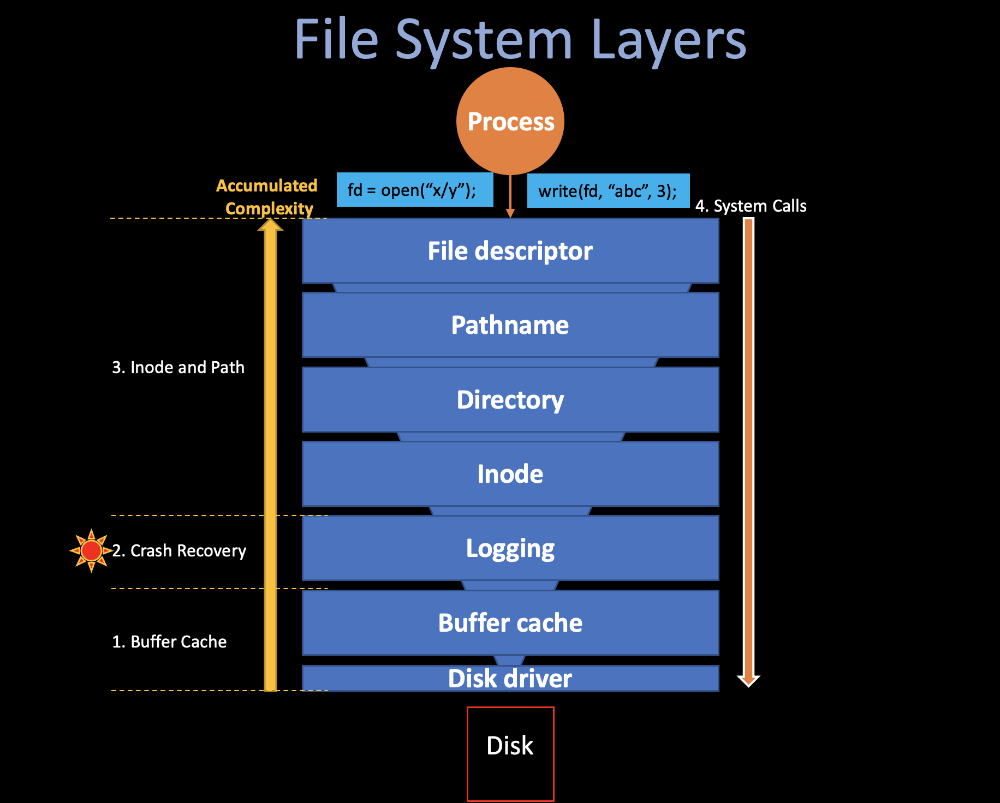

File System (ii)
05/25/2022 By Angold Wang

3. Inode and Path
Up until log, these lower layers are all interacting with disk blocks (sectors) with a specific blockno. But in the file systems that we are using in our daily life, seems that we are manipulating data on specific files, and finding them using path names.
The upper layers (layer 4, 5, 6, 7) is trying to ease the user by providing path, file, directory, etc, which we are familar with.
i. Block Allocator
File and directory is stored in disk blocks, which must be allocated from a free pool. Xv6's block allocator maintains a bitmap on disk, with one bit per block. A zero bit indicates that the corresponding block is free; a one bit indicates that it is in use.
The main API function that the block allocator provided is balloc() which allocates a new disk block and return its blockno. The loop inside balloc is split into two pieces:
- The outer loop reads each block of bitmap bits (on disk).
- The inner loop checks all Bits-Per-Block(BPB) bits in a single bitmap block.
The loop looks for a block whose bitmap bit is zero, indicating that it is free. If balloc finds such a block, it updates the block and writes it to the disk (log_write) then return the blockno of that block.
// kernel/fs.c:
for(b = 0; b < sb.size; b += BPB){
// for each bitmap block
bp = bread(dev, BBLOCK(b, sb));
for(bi = 0; bi < BPB && b + bi < sb.size; bi++){
m = 1 << (bi % 8);
if((bp->data[bi/8] & m) == 0){ // Is block free?
bp->data[bi/8] |= m; // Mark block in use.
log_write(bp); // write to the log buffer (bitmap -> disk)
brelse(bp);
bzero(dev, b + bi);
return b + bi;
}
}
}